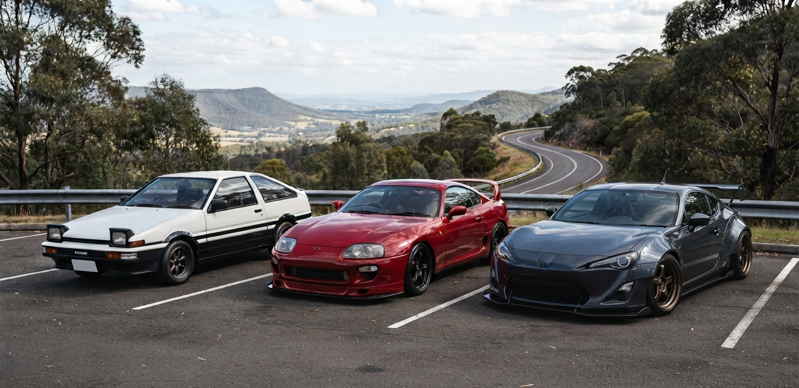

Híres Toyota autók

A Toyota nem csupán a mindennapi megbízhatóság szinonimája, hanem a japán autósport és a globális tuningkultúra egyik legmeghatározóbb legendája is, amely olyan mérnöki remekművekkel írta be magát a benzingőzös történelemkönyvekbe, mint az AE86 és a 2JZ motor. A nyolcvanas években hódító, pehelysúlyú és hátsókerék-meghajtású Corolla AE86 (a "Hachi-Roku") tökéletes súlyelosztásának és agilitásának köszönhetően nemcsak a versenypályákon aratott sikereket, de uralta a japán hegyi utakat, és ezzel letette a modern driftelés alapjait. Ezt a teljesítményközpontú elhivatottságot koronázta meg a kilencvenes években a negyedik generációs Suprában dobogó 2JZ soros hathengeres motorblokk: egy elpusztíthatatlan, extrém terhelést is bíró, brutális erőtartalékokkal rendelkező ikon, amely a mai napig a tuningvilág egyik legtiszteltebb erőforrása, örökre bizonyítva, hogy a Toyota mérnökei páratlan zsenialitással képesek ötvözni a végtelen tartósságot a színtiszta adrenalinnal.